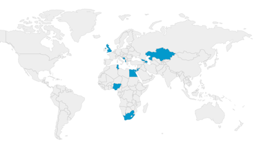

Project–arCc stands for assuming responsibility for Climate change. The project aims to fully align its outputs to a collective response towards climate change, using the combined efforts of 14 partners representing 13 countries. Funded and supported by the British Council under the open call for Creative Commissions, the project’s initial inception was triggered during the COVID-19 pandemic, as Middlesex University and Khazar University collaborated as part of the Creative Spark programme of the British Council. At a time of crisis, the measures taken to support learning, work, collaboration and communication, seemed to have a positive impact on the environment and contributed towards reversing climate change. The project idea was created, to bring together diffirent cultures and disciplines in a range of a collaborative initiatives focusing on increasing awareness and supporting individuals to assume responsibility for their impact on climate change. The focus of the project is for participating institutions to share resources so they engage young people in assuming responsibility towards saving the planet. As local partners will disseminate resources to the wider public, students will become ambassadors of Project–arCc in an effort to reach members of local communities.
Project-arCc partners include 13 prestigious Universities and Oracle TES, an experienced e-learning and education solutions provider. The consortium identified an opportunity was triggered by the COVID-19 pandemic. Societies that previously dismissed remote working and working from home had to adapt to new restrictions imposed from national lockdowns. Educational systems that did not value e-learning or argued that it should not be recognised as an official mode of learning delivery had to adopt such practices as schools closed. Travel was restricted across the world, which led businesses to introduce new communication and collaboration approaches using computer supported cooperative work. Governments and organisations had to rethink the use of available resources and introduce more efficient ways to manage them. Finally, individuals realised that there is no endless supply of materials, goods and services in a society that is at the verge of collapsing due to the panic triggered by the early signs of a pandemic. These issues gave birth to the five themes of Project – arCc, which form the core of the project’s initiatives.
We hope you can join our international team in making a change to save our planet. Our starting point is increasing awareness and assuming responsibility in Albania, Azerbaijan, Bosnia and Herzegovina, Egypt, Georgia, Jordan, Kazakhstan, Kosovo, Nigeria, Palestine, South Africa, Tunisia and the UK. We hope more partners will join our efforts to communicate our message to the network of existing countries but also reach more countries worldwide.